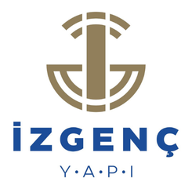

Geleceğinizi güvenle birlikte
inşa edelim.
Yapı sektöründeki 30 yılı aşkın deneyimimizi, öğrenmeye açık ve işini sahiplenen ekip arkadaşlarımızla ileri taşıyoruz. Siz de emeğinizle değer katacağınız bu yolculuğun parçası olun.


İzgenç’te başarı; titizlikle çalışan, sorumluluk alan ve aynı hedefe birlikte yürüyen ekiplerin ortak emeğiyle oluşur.
1993'te Marmaris'te başlayan yolculuğumuzu, 30 yılı aşkın süredir aynı titizlikle sürdürüyoruz. Açıklık, şeffaflık ve dürüstlük; sadece müşteriye değil, birbirimize karşı da temel sorumluluklarımız.
Sahada öğrenmeyi, projeyi sonuna kadar sahiplenmeyi ve uzun süreli çalışmayı önemsiyoruz. Mimari ekibinden saha mühendislerine, satış ofisinden hukuk danışmanlarımıza kadar; her pozisyonda gelişim ve sorumluluk eşit yürür.
İzgenç'te olmak.
Uzun soluklu ekip kültürü
Yıllara dayanan çalışma ilişkileriyle güçlenen, güvene ve deneyime dayalı ekip yapısı.
Sahada öğrenme deneyimi
Mimari, saha ve satış süreçlerinin iç içe ilerlediği; pratiğe dayalı gelişim ortamı.
Çevik organizasyon yapısı
Kararların hızlı alındığı, yönetime ve sahaya yakın çalışma modeli.
Yetkinlik gelişimi
İSG, mesleki yeterlilik ve teknik eğitimlerle desteklenen sürekli gelişim süreci.
Şu an açık olanlar.
Aşağıda görmediğiniz alanlar için genel başvuru yapabilirsiniz.
Proje Mimarı
Uygulama projeleri ve şantiye koordinasyonu deneyimine sahip, en az 4 yıl tecrübeli mimar.
Şantiye Şefi
Kat karşılığı ve kentsel dönüşüm projelerinde saha yönetimi; en az 6 yıl tecrübe.
Satış Uzmanı
Konut projelerinde satış deneyimi; danışmanlık becerileri yüksek, müşteri odaklı.
Sözleşme ve Hukuk Uzmanı
İnşaat sözleşmeleri, KVKK ve gayrimenkul hukuku alanında uzman.
Diğer roller için genel başvuru
Yukarıda göremediğiniz bir rol için CV'nizi paylaşın; uygun pozisyon açıldığında size dönüyoruz.